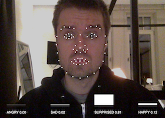

Machine Learning Workshop @AndreasRef
Day 1) ml5js
Templates, examples and exercises
0) p5js online editor
1) Train a classification algorithm

- Exercise 1 (individual): Train a classifier to distinguish between two different classes. Make the sketch output a descriptive text (or a visual or sound if you are more advanced) for each class.
2) MobileNet pretrained classification

- Exercise 2 (group): Pick an object (or a few objects) for the model to recognise. Make something happen when your object(s) gets detected.
3) Train a regression algorithm

- Exercise 3 (individual): Train the regressor and use the continuous output value to control something. It is okay to leave the code as it is, and just focus on training the system.
4) PoseNet pose detection

- Exercise 4 (group): A) Use the x-y value of a bodypart to control something or B) Use "Classify poses" as a starting point and make something happen for the different poses.
5) Beyond ml5js: Sound, speech and face
- 
- Exercise 5 (group): Use one of the three templates above as a starting point for making an interactive sketch that you control with sounds, speech or facial expressions.
- Exercise 6 (individual):
Come up with as many ideas as possible for projects that can be build using the techniques you have learned so far in 20 minutes. You MUST make a least 10 ideas, and at least 1 idea for each of the five headlines:
1) Train your own classification
2) Pretrained classification
3) Regression
4) PoseNet
5) Sound, speech and face
Each idea should be written on a single small post-it.
- Exercise 7 (work in pairs):
Share all your ideas with the person next to you and discuss them.
It is okay to come up with more ideas and build on top of each others ideas as you share.
In the end pick the best three ideas per person, redo them on a big post-it with a clear descriptive title + a small sketch, so they are easy to read and understand and bring the ideas tomorrow.
Other links
Day 2: Runway
Required downloads
-
Runway
Download and install Runway. You should have recieved an invitation over email. Use that email address to set up your account. If you haven't let us know!
Please follow the Installation guide to make sure you are all setup (and have Docker running) before we start.
Once Runway is installed with Docker, you can install the models you want to play with in the workshop. Install im2txt (required) and any other models you feel like and have space for on your computer. See step 1 and 2 from this tutorial for how to install models.
Exercises
- Exercise 1 (individual):
Find 10 images either online or on your computer that you want to run through the different models in Runway and place them in a folder. Try to pick images that are not all too similar, and perhaps pick different styles of images (press photos, paintings, images from pop culture, personal photos).
- Exercise 2 (pairs): im2txt -> AttnGAN
1) Use your images as input to im2txt.
2) Use the line of text from im2txt as input for AttnGAN.
3) Document interesting combinations.
- Exercise 3 (pairs): AttnGAN -> im2xt
1) Write a sentence and make AttnGAN output an image.
2) Save the image to your computer.
3) Feed the image to im2txt.
4) Document interesting outputs.
- Exercise 4 (pairs): im2xt -> GPT-2
1) Use your images as input to im2txt.
2) Take the sentence from im2xt and use it as input to GPT-2.
3) Document interesting combinations as a single image.
- Exercise 5 (pairs):
Upload the most interesting images to this Google Document under the correct headline.
- Exercise 6 (individual):
Come up with as many ideas as possible for projects that can be build using the models from Runway 20 minutes. You MUST make a least 10 ideas. Each idea should be written on a single small post-it.
- Exercise 7 (work in pairs):
Share all your ideas with the person next to you and discuss them.
It is okay to come up with more ideas and build on top of each others ideas as you share.
In the end pick the best three ideas per person, redo them on a big post-it with a clear descriptive title + a small sketch, so they are easy to read and understand and bring the ideas tomorrow.
Examples in p5js
- Download zip with examples for interfacing Runway from p5js
- Setting up p5js with a local server
- Setting up a local server for p5js
Examples in Processing (optional)
- Download zip with examples for interfacing Runway from Processing (optional)
- Download Processing (optional)
Contact Andreas Refsgaard
Website / Email / Facebook / Twitter / Instagram / GitHub / Vimeo